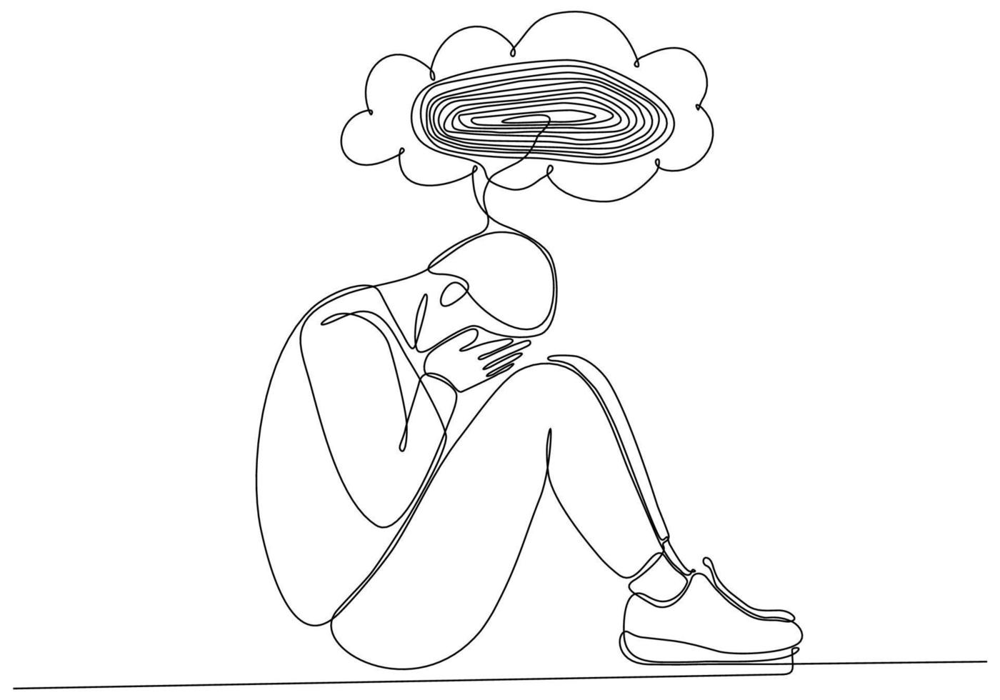
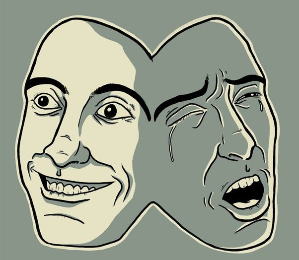
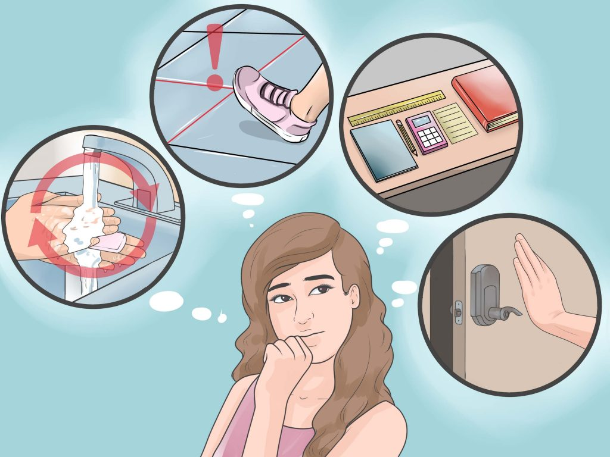

El Trastorno de Ansiedad Generalizada (TAG) es una condición mental caracterizada por una preocupación excesiva e incontrolable sobre una amplia variedad de aspectos de la vida diaria. Las personas con TAG a menudo anticipan desastres y están excesivamente preocupadas por temas como la salud, el dinero, la familia, el trabajo y otros problemas, incluso cuando no hay razón aparente para preocuparse
La causa exacta del TAG no se conoce, pero se cree que es el resultado de una combinación de factores genéticos, ambientales, psicológicos y de desarrollo:
Factores Genéticos: El TAG puede ser hereditario, y las personas con antecedentes familiares de ansiedad son más propensas a desarrollarlo.
Factores Ambientales: Experiencias de vida estresantes o traumáticas pueden contribuir al desarrollo del TAG.
Factores Biológicos: Desequilibrios en los neurotransmisores del cerebro, como la serotonina y la norepinefrina, pueden desempeñar un papel.
Factores Psicológicos: Rasgos de personalidad como el perfeccionismo y una tendencia hacia el negativismo pueden aumentar el riesgo.
Trastorno Depresivo Mayor

El trastorno depresivo mayor (TDM), también conocido como depresión clínica o depresión mayor, es un trastorno mental caracterizado por una persistente y profunda sensación de tristeza y una pérdida de interés en las actividades que anteriormente eran placenteras. Este trastorno afecta negativamente la manera en que una persona se siente, piensa y maneja las actividades diarias
El TDM es un trastorno complejo con múltiples causas, que incluyen:
Factores Biológicos: Desequilibrios en neurotransmisores como la serotonina, la norepinefrina y la dopamina. También se ha observado una relación con la genética y antecedentes familiares de depresión.
Factores Psicológicos: Traumas, abuso, pérdida de un ser querido, o cualquier evento estresante significativo.
Factores Ambientales: Condiciones de vida estresantes, aislamiento social y falta de apoyo social.
Factores Hormonales: Cambios hormonales durante el embarazo, el posparto, la perimenopausia o problemas de tiroides.
Trastorno Bipolar

El trastorno bipolar es un trastorno mental caracterizado por cambios extremos en el estado de ánimo, energía, niveles de actividad y la capacidad de llevar a cabo las tareas diarias. Estos cambios en el estado de ánimo incluyen períodos de manía o hipomanía (euforia, hiperactividad) y períodos de depresión (tristeza, desesperanza).
Las causas exactas del trastorno bipolar no se conocen completamente, pero varios factores pueden contribuir:
Factores Genéticos: El trastorno bipolar tiende a ser hereditario, sugiriendo una fuerte componente genética.
Factores Biológicos: Desequilibrios en neurotransmisores y alteraciones en la estructura y función del cerebro.
Factores Ambientales: Estrés significativo, trauma, abuso de sustancias y otros factores de estrés pueden desencadenar episodios.
Trastorno Obsesivo-Compulsivo (TOC)

El trastorno obsesivo-compulsivo (TOC) es un trastorno mental caracterizado por la presencia de obsesiones y compulsiones que interfieren significativamente con la vida diaria de la persona.
Las causas exactas del TOC no se comprenden completamente, pero varios factores pueden contribuir:
Factores Biológicos: Desequilibrios en los neurotransmisores del cerebro, especialmente la serotonina.
Genética: Antecedentes familiares de TOC pueden aumentar el riesgo.
Factores Ambientales: Experiencias de vida estresantes o traumáticas pueden desencadenar el TOC.
Estructura y Función Cerebral: Diferencias en ciertas áreas del cerebro pueden estar asociadas con el TOC.